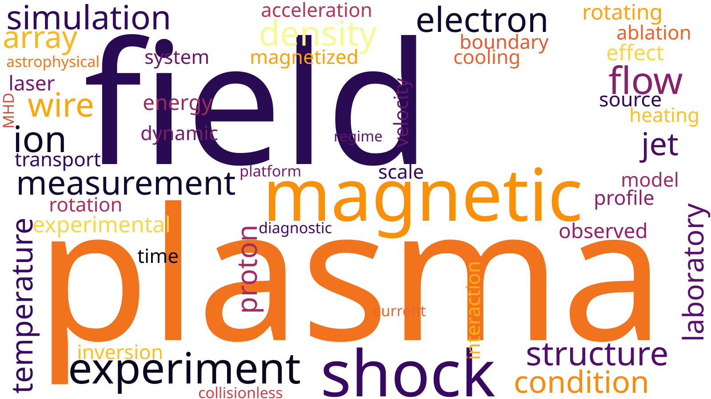

Introduction — My work focuses on understanding the physics
of plasmas: gases at high temperatures where electrons are no longer
bound to atoms, producing a mixture of free negative and positive charges.
Plasmas are interesting for many reasons. Arguably, the most important is
that about 99% of the observable universe is in this state: stars, black hole
environments, supernovae, the heliosphere, the interstellar medium,
the intergallactic medium. All are plasmas. Our observations of the universe
crucially depend on the emission of light (either as visible, radio, infrared,
x-rays, and so on) from these cosmic sources. Therefore, to understand the
universe, we must first master plasma physics.
Plasmas are routinely used for industrial applications. Since the electric charges
are separated, it is easy to select and extract particles, energize, and control
them. At very high temperatures (comparable and above the center of the sun),
collisions between the ions are energetic enough to bind them together, releasing
energy in a process called nuclear fusion. The physics of plasmas is an intellectual
pursuit on its own. They often exhibit highly dynamical, nonlinear, multiscale
behaviour that are fun to deal with and learn from.
Below I show a word cloud of the fifty most recurrent terms in my research papers. The
most prominent one is, unsurprisingly, plasma. The next two words are actually
one concept: magnetic fields. Plasmas are exceptional electrical
conductors where currents generate, support, and even amplify, magnetic fields.
The physics of magnetized plasmas is a pervasive topic in my work.
This page summarizes* my previous and current work. I will try to give a general
introduction to each topic, pinpointing the main outstanding questions. (And when
possible, what we’ve learned). Hopefully, these will explain the rest of the word cloud.
* or, will, whenever this page is completed.
Contents

High Energy Density Laboratory Astrophysics
High energy lasers and pulsed-power generators
Write text here.
MHD Scaling
“The art of conjecturing [...] is defined as the art of estimating
to the best as one can, [...] the safest, the surest, or the most advisable way:
in this alone rests all the wisdom of a philosopher
and all the prudence of a politician.”
— Jacob Bernoulli, 1713.
Write text here.
Beyond MHD Scaling
1. Gravity and rotation curves.
2. Kinetic physics.
Write text here.
Relevant publications:
Rotating Plasmas and Accretion Discs
Write text here.
Relevant publications:
Magnetized Collisionless Shocks
Write text here.
Relevant publications:
Plasma Self-Magnetization in Laser-Target Interactions
Write text here.
Relevant publications:
Magnetic Reconnection
Write text here.
Relevant publications:
Plasma Turbulence
“Directly connected with some of the aspects of the [...] problem is
that of turbulence which is infinitely more difficult to attack.
If I may again quote my father, he described it as
‘too complicated for him’.”
— Hans Albert Einstein, 1971
(Some unsolved problems in river flow,
W. J. R. Alexander,
pp. 2, 1979)
Relevant publications:
Plasma Jets
Write text here.
Relevant publications:
Nonlinear Kinetic Instabilities
Write text here.
Relevant publications: